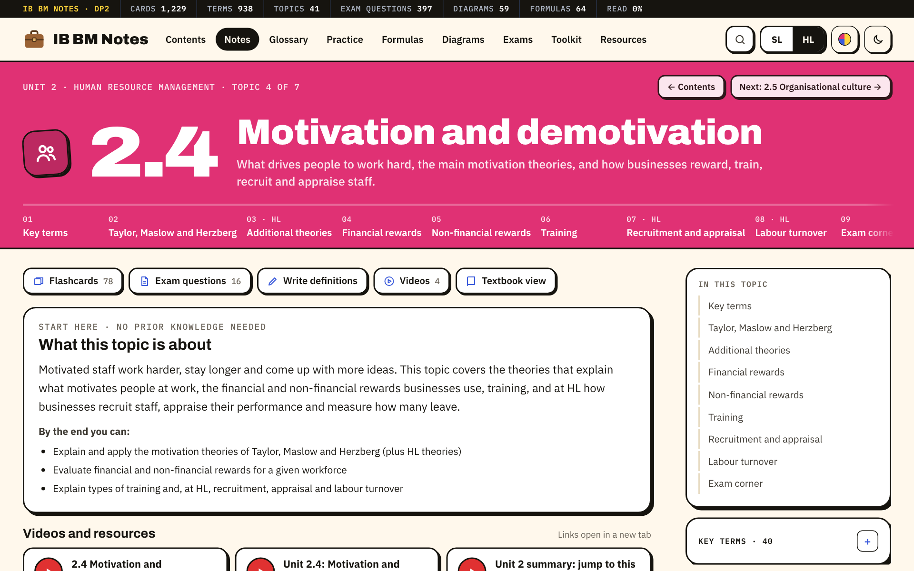
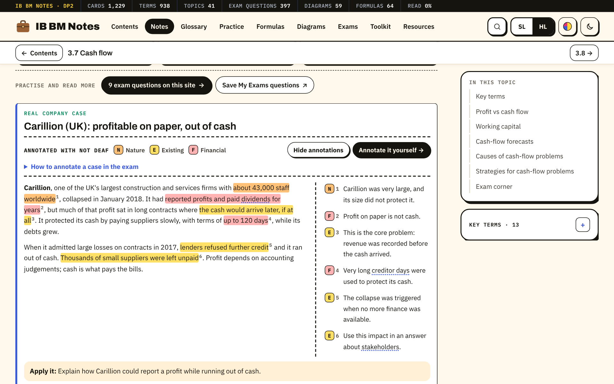
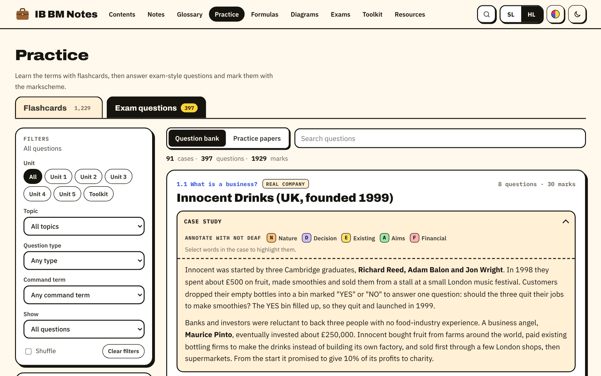
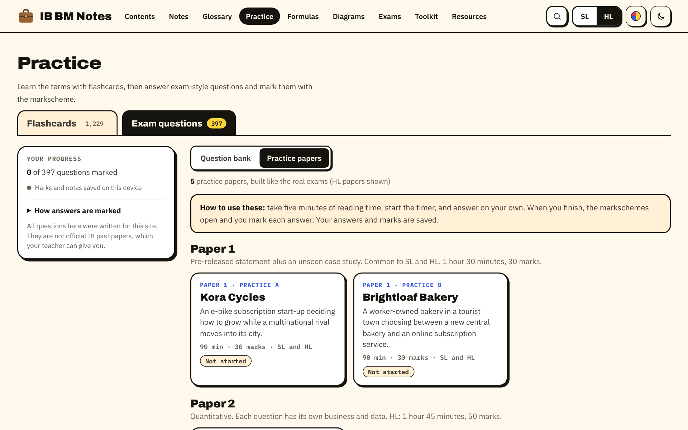

Free notes, flashcards, exam questions and practice papers for IB Business Management. Understand the idea first, then learn how to write it for marks.
Totals for HL. SL has 29 topic pages, 829 flashcards and 287 exam questions.
What's inside
All five units and the toolkit, explained in everyday language first and exam language second, with ways to test yourself right next to each topic.
Every topic starts with what it's about. Each section has a plain explanation, an everyday comparison and the exam definition.
Revise from the short cheat-sheet version, or switch to the textbook version for full explanations and tables in short sentences.
39 real company cases, from Innocent to Carillion, annotated with Not DEAF. Links in the notes jump straight to the evidence.
1,229 cards with Learn, Write, Test and Match modes, plus quick games for when you need a break.
Questions grouped around a case, with model answers and markschemes, plus full Paper 1, 2 and HL Paper 3 practice papers with a timer.
All 64 formulas with worked examples and a drill, 59 diagrams drawn to scale, 938 full-mark definitions and over 130 short videos.
For students
Open the notes, choose SL or HL at the top, and pick a topic. Then work through these four steps.
Read the topic. If a part feels hard, switch to the textbook version or watch the short video.
Go through the topic's flashcards in Learn mode until they're all mastered.
Annotate the real company case, answer the exam questions and mark yourself honestly with the markscheme.
Closer to the exam, sit a full practice paper with the timer on.
For teachers
Nothing for students to sign up for, and nothing to install. If you spot anything that doesn't match the subject guide, please send a correction. It helps every student using the notes.
Post d1v4nchik.github.io/DPBusinessManagement on your class page. No accounts or email addresses needed.
Open the topic you're teaching and copy the address. The link opens that exact page.
Ask students to master a topic's flashcards, or to answer and self-mark its exam questions.
The annotated real company cases model the Not DEAF method, and students can annotate the next case themselves.
The textbook view, the cases and the diagrams work well on a projector, in light or dark mode.
No accounts, ads or tracking. Each student's progress stays in their own browser.
Offline
On the bus, on a plane or somewhere with bad wifi. Choose one.
Keeps the notes on your device, opens offline, and updates itself whenever you're back online.
A single file with all the notes. Double-click it to open it in your browser, with no internet needed. It doesn't update itself, but when newer notes come out it shows a message (if you're online) so you can download it again.
A quick look




Questions
Yes. No payments, no ads and no account. Just open it and study.
In your browser, on the device you're using. Nobody else can see it, and your laptop and phone keep separate progress.
IB Diploma Business Management (first assessment 2024), SL and HL: Unit 1 Introduction to business management, Unit 2 Human resource management, Unit 3 Finance and accounts, Unit 4 Marketing, Unit 5 Operations management, and the business management toolkit, plus guides to Papers 1, 2 and 3 and the internal assessment.
No. These are independent study notes, not made by, endorsed by or connected to the International Baccalaureate Organization. "IB" and "International Baccalaureate" are its trademarks. The exam questions and practice papers are written in the style of the exams, not copied from them. Always check against the official subject guide and your teacher.
Thank you. Please send a correction with the topic number (for example 3.7) and what's wrong. Both corrections and suggestions need a free GitHub account.
Please do. Send the link to classmates and teachers. The notes are © d1v4nchik, all rights reserved, so share the link rather than copying, reposting or selling the content.